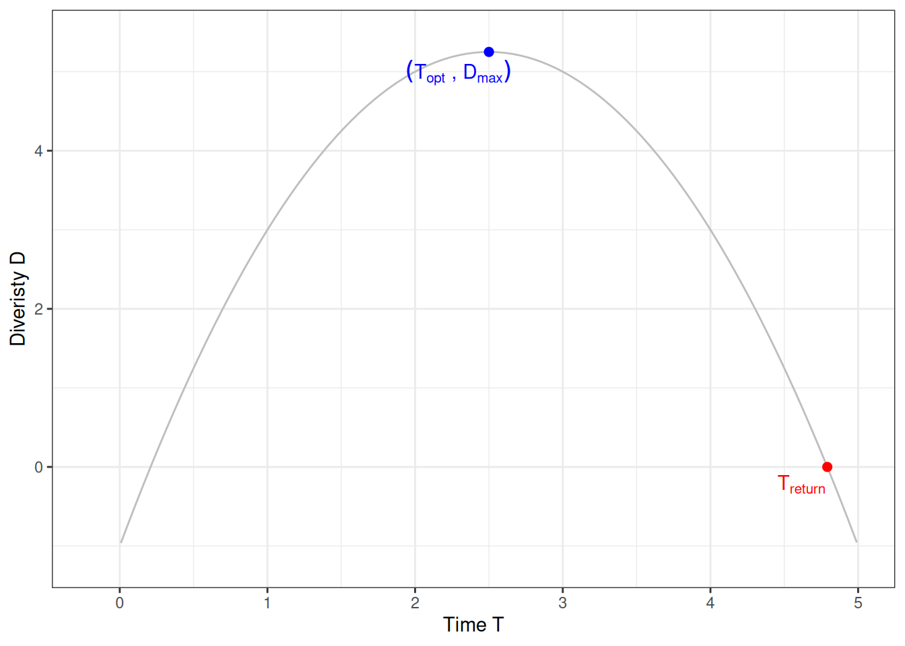

H1: tree diversity long-term response increases through time to a maximum value, after which it then declines in late succession
H2: tree diversity also shows a non-linear response to increased intensity of logging: lightly logged forests show a transient increase in tree diversity, but more intensively logged forests show a strong negative effect on diversity
For preliminary analyses we focused on Paracou, the most data riched dataset, to better explore the model shape. We focused on data two years after logging to remove the short term response (to be better explored in the previous chapter). We first worked with species richness (no evenness) and used relative richness normalised by pre-logging richness. Further exploration should extend the modelling framework to other diversity metrics, test at the genus level for datasets with less information, and try to use absolute richness and include normalisation within the modelling framework.
Following the first hypothesis H1, we used a simple quadratic regression of relative richness with relative time to logging to correctly represent the hump-shaped expectation:
\[
Richness \sim \mathcal N(a \times time^2 + b \times time + c, \sigma^2)
\]
The main conceptual issues is with control plots for which we expect more a linear relationship with time with either a stable richness (\(Richness \sim \mathcal N(c,\sigma^2)\)) or an ecological drift toward higher or lower values (\(Richness \sim \mathcal N(b \times time + c,\sigma^2)\)). Maybe a model variable selection using instead an horseshoe prior on \(a\) could help distinguish hump-shaped from linear responses.
We first explored the question of model shape comparing models evaluations, other shapes should be further included.
It appears that the quadratic shape is always better, which is expected as more flexible, but with interestingly net improvement in model fitting for logged plots but not undisturbed plots. We thus applied the quadratic model on each plot independently, but should later use a single common model with site and plots effects, either fixed random or hierarchical.
The quadratic coefficient \(a\) was always significant at the exception of control plot 11 where a linear relationship seems better. But note that for control plot 1 and 6 \(b\) and/or \(c\) were not significant either. Interestingly, we can derive indices from the three parameters \(a\), \(b\), and \(c\), such as:
\(T_{opt} = -\frac{b}{2a}\) the time to reach the maximum richness after disturbance
\(D_{max} = aT_{opt}^2 + bT_{opt}+c\) the maximum richness after disturbance
\(T_{return} = \frac{-b-\sqrt{b^2-4ac}}{2a}\) the time to reach back the equilibrium
This indices are exemplified on the figure below:
Code
a <--1b <-5c <--1t_opt <--b/2*ad_max <- a*t_opt^2+ b*t_opt + ct_return <- (-b -sqrt(b^2-4*a*c))/(2*a)ggplot(data.frame(x =rnorm(1), y =rnorm(1)), aes(x, y)) +xlim(0-0.2, t_return+0.2) +ylim(c-0.2, d_max+0.2) +geom_function(fun =function(x) a*x^2+b*x+c, col ="grey") +theme_bw() +ylab("Diveristy D") +xlab("Time T") +geom_point(x = t_return, y =0, col ="red", size =2) + ggrepel::geom_text_repel(label =expression(T[return]), x = t_return, y =0, col ="red") +geom_point(x = t_opt, y = d_max, col ="blue", size =2) + ggrepel::geom_text_repel(label =expression((T[opt]~","~D[max])), x = t_opt, y = d_max, col ="blue")

We thus obtained the following parameters and corresponding trajectories:
Note that some trajectories such as plot 10 are not reaching back the pre-disturbance diversity and have thus no return time. However it seems on the opposite that the trajectory reached back diversity quickly but then ecological drift resulted in loss diversity in the following years similarly to control plots with lower values influencing the trajectory fitting. We have a similar pattern for plot 7.
Using the extracted indices we could further test the second hypothesis H2 with a regression of the indices against disturbance intensity represented here by lost basal area:
Code
inds %>%ungroup() %>%select(delta_ba, d_max, t_opt, plot) %>%gather(metric, value, -delta_ba, -plot) %>%mutate(metric =recode(metric, "d_max"="D[max]", "t_opt"="T[opt]")) %>%filter(value >=0, value <100) %>%ggplot(aes(delta_ba, value)) +geom_smooth(method ="lm", formula = y ~poly(x, 2), se = F) +geom_point(col ="grey") +facet_wrap(~ metric, scales ="free", labeller = label_parsed) +theme_bw() +xlab(expression(Delta[BA])) +ylab("") + ggrepel::geom_text_repel(aes(label = plot), col ="grey") + ggpubr::stat_cor(label.y =-2) + ggpubr::stat_regline_equation(formula = y ~poly(x, 2)) +ylim(-3, NA)
We seem to have more a linear increase of maximum diversity with disturbance intensity across Paracou plots but the time to reach the optimum, and similarly the time of return to the equilibrium (not shown but related), have apparently a quadratic shape with a hump-shaped response showing longer time to reach the optimum diversity for intermediately disturbed plots. This should be further explored but we would expect oppositely diversity and not time to be hump-shaped. The relation for \(T_{opt}\) is non-significant, and the linear relation with \(D_{max}\) could be related to a lack of strongly disturbed plots.
We further tested the modelling through a single hierarchical model as follow: